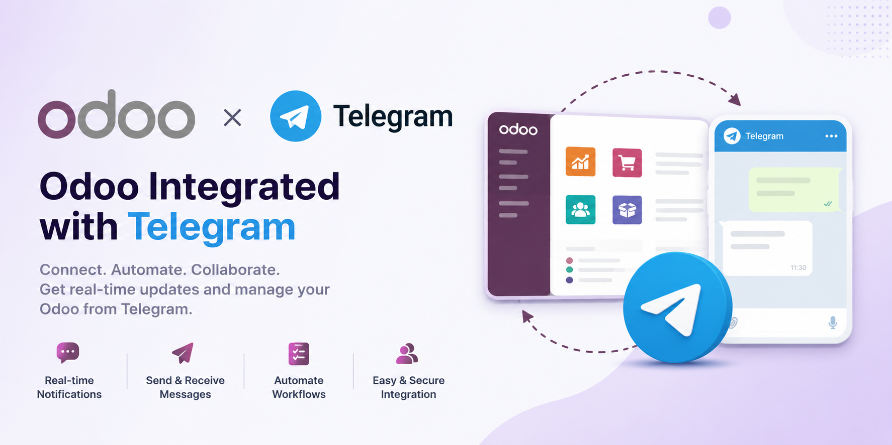

Send Telegram messages, business documents, and chatter notifications directly from Odoo 17 using your own Telegram bot.
This module adds Telegram messaging capabilities to Odoo. Users can compose Telegram messages from Odoo, select recipients from contacts, attach files, use reusable templates, and send generated QWeb PDF reports through Telegram.
It also records sent and failed Telegram messages, making it easier to review delivery results and resend messages when needed.
Compose and send Telegram messages from a familiar Odoo wizard with receivers, message body, attachments, and template selection.
Create Telegram templates for Odoo models, render dynamic fields, and reuse message layouts for common communication.
Attach Odoo QWeb reports as PDF documents, such as quotations, invoices, or any configured business report.
Send Telegram notifications when Odoo messages include configured partners, helping users follow important discussions.
Track Telegram message status with receiver, related document, attachments, failure reason, and resend action.
Format outgoing Telegram messages through MarkdownV2 conversion for cleaner text delivery in Telegram.
Create a Telegram bot with BotFather and save the bot token in Odoo.
Add Telegram Username and Telegram Chat ID on partner records.
Open the Telegram composer, choose contacts, write the message, and attach files.
Check message delivery status and resend failed messages from the history menu.
| Odoo Version | 17.0 |
| Category | Communication |
| Dependencies | base, mail |
| Python Package | telegramify-markdown |
Developers can open the Telegram composer from any business document by passing the model, record ID, recipients, and optional template in the action context.
def action_send_telegram(self):
return {
'type': 'ir.actions.act_window',
'name': 'Compose Telegram Message',
'res_model': 'telegram.compose.message',
'view_mode': 'form',
'target': 'new',
'context': {
'default_model': self._name,
'default_res_id': self.id,
'default_record_name': self.display_name,
'default_partner_ids': [(6, 0, self.partner_id.ids)],
},
}Make sure the required Python package is installed on your Odoo server before installing the module:
pip install telegramify-markdownAfter installation, configure the Telegram bot and partner chat IDs before sending messages.